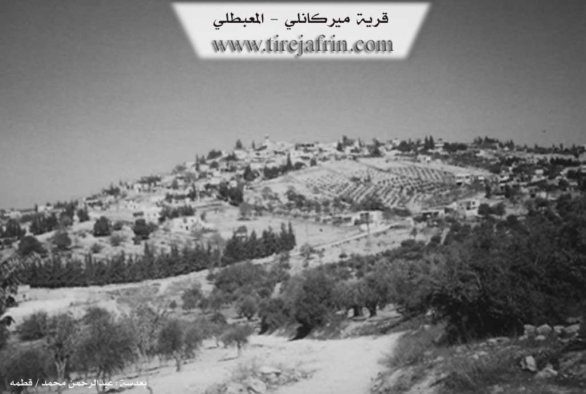
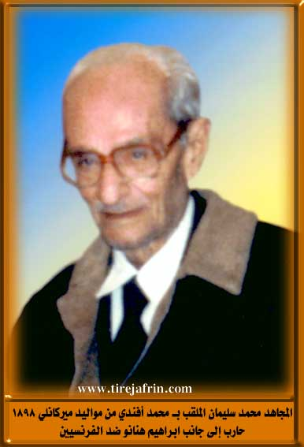

General Information
Nahiya (Subdistrict)
Mabeta
Also Known As
Al-Amiriyah, Hise, Husê, Mirka, Hemtato, Mirkan, Mirkanli, Mîrka, Mîrkan, Ĥem Tato، الأميرية, الأميرية, حسة, ميركان, حسه, كونده حسه, ميركو
Tribes
Mîrkan, Mîrko
Families, Clans, etc.
Ebû Ciwan, Ebû Kawa, Hec Emîr, Hec Selîm, Mala Cefir, Mala Goro, Mala Gênco, Mala Hemolîk, Mala Hemtat, Mala Sînê, Malê Cepiro, Malê Guro, Malê Gênco, Malê Hemalîkê, Malê Hemtatê, Malê Kêlo, Malê Sînê

Photos


Basic Information about Mîrka
Source: Ax û Welat
Etymology: Originally called Mîrka, then Hemtatu (after the founder Hemtat), and finally Gundê Hisê (after Hisê, the son of Hemtat)
Old Names: Hemtatu, Hisê
Foundation Date/Period: More than 350 years ago
Trees: Darik çinarê
Wells: Bîra gundê Husê
Source: Afrin 366
Etymology: The village is primarily known as Mêrkan or Gundê Hisê. It has several names, including Amîrî. Historically, Ereb neighbors referred to it as Hemto to.
Foundation Date/Period: 300-400 years ago
Hills: Vêla Sînemê, Koxrê, Hec Hesna
Ruins: Xirbê me
Trees: Darê Hinarê
Other Landmarks: Birîmce, Şîtka, Gund Bêlwehan
Summaries
I. Summary from TirejAfrin Site (English) of Mîrka
According to the book 'جبل الكرد (عفرين)' 'Mountain of the Kurds (Afrin City)' geographical study by Dr. Mohammed Abdo Ali (محمد عبدو علي):
usêğ - Gundî Mîrka - Ğem Tato (مريكان), الأميرية /3085n - 920ha - 5km - 630m/:
- This village has three local names, all of Kurdish origin: Mirkan (مريكان) /the princes/ is the name of a Kurdish tribe found in Sinjar Mountain (جبل سنجار) /see Lerkh, p. 51/. And usê ğ Gundî: which is a proper name from Hussein (حسين). And Ğem Tato: meaning Mohammed (محمد) "the Tatar", nicknamed so because he was blonde with fair skin resembling the Tatars, which is a characteristic of some inhabitants of Sim'an Mountain (جبل سمعان) known for their fair complexion.
- A large village located on the surface of a plateau at the beginning of Khastiya valley (وادي خاستيا). It has commercial establishments and small professional workshops. Perhaps its mosque is the oldest in the region, dating its construction to the beginning of the twentieth century.
According to the book: 'عفرين.... نهرها ورواbiها الخضراء' 'Afrin City.... Its River and Green Hills' by writer Abdul Rahman Mohammed (عبدالرحمن محمد) from Qatmeh village (قرية قطمه):
Mirkanli (ميركانلي): A village in Kurd Mountain (جبل الكرد), belonging to Mabetli District (ناحية المعبطلي), Afrin City Region (منطقة عفرين), Aleppo Governorate (محافظة حلب).
It is a large village located in the central part of Kurd Mountain (جبل الكرد), on the surface of a wavy calcareous plateau crossed by streams heading northeast and southwest. Its soil is clay-based and forests and pastures spread on it. It is 5km from the district center toward the southwest. To the north it is bordered by slopes and streams and Barimjah village (قرية بريمجة), to the south by a stream and Jarjam valley (وادي جرجم) and Shirkanli village (قرية شيركانلي) and Iki Akhour (إيكي آخور), to the west by a slope and Jarjam valley (وادي جرجم) planted with olive, walnut, and apricot trees and high mountain elevations and Masto Ashour village (قرية مستو عاشور), and to the east by slopes and several streams planted with olive trees and Dar Kir Kabir village (قرية دار كير كبير). It contains approximately 350 houses (بيتاً) and is about 400 years old (عاماً). Its old houses are stone and clay with flat wooden roofs, and the modern ones are stone and cement spreading toward the south and west to the village square beside the public road. It has an electricity network and the village drinks from a water network branched from the water network of Barimjah village (قرية بريمجة) and from local wells. It has a primary school and another preparatory school, telephone, mosque, and agricultural cooperative association. There are four modern olive presses. It is connected to the district center by a paved road passing through its center to several neighboring villages. The people work in rain-fed agriculture on an area of 880ha of grains, olives, legumes, and other fruit trees. They also cultivate the remaining 40ha irrigated with artesian wells (summer vegetables, pomegranates, walnuts, and apricots) in the Jarjam valley plain to Rutanli spring valley (وادي نبع روطانلي), alongside raising sheep and goats. Currently the village drinks from a modern water network in the south of the village Jarjam valley (وادي جرجم) with (Shabirlaq) and the village is divided into three sections: a northern section at the highest elevation, the second section in the center, and the third section in the south around the public road where there are several blacksmith shops and commercial establishments. Among its most important families are the Hamliko (حمليكو), Aliko (عليكو), and Suleiman (سليمان) families.
Village headman: Mustafa Khalil Qader (مصطفى خليل قادر)
II. Summary of Mîrka from Ax û Welat
Source: https://www.youtube.com/watch?v=SM8rsva4AaQ
Located in the Mabeta district of the Çiyayê Kurmênc region in Efrîn, the village commonly known as Gundê Hisê (or Hisên) has a distinct tripartite naming history reflecting its origins. According to village elder Mihemed, the settlement was founded more than 350 years ago by an individual named Hemtat, who migrated from Sîncar (Sinjar) in Başûrê Kurdistanê. Upon his arrival, the site was initially associated with the Mîrkan tribe (referred to as "Eşîra Mîrko"), giving it its first name, Mîrka. Later, it became known as Hemtatu or Gundê Hemtatê in honor of the founder. Eventually, the name changed a third time to Gundê Hisê, named after Hisê, the son of Hemtat.
The social structure of the village is defined by six primary families (malbat): Mala Cefir, Mala Sînê, Mala Hemolîk, Mala Hemtat, Mala Goro, and Mala Gênco. Today, the village comprises approximately 350 households. It serves as a strategic economic hub for the surrounding area, particularly after the establishment of a local Tuesday market (Bazar) following the declaration of Democratic Autonomy. This market serves as a commercial center for roughly 15 to 20 nearby villages, including Sotiya, Selo, and Xozana.
Economically, Gundê Hisê is renowned for its agriculture, specifically olive and sumac production. The head of the village council notes that unique olive varieties grow here, such as Zeytûnê Kêlo, Xelxalî, and the oil-rich Zeytûnê Zêtî. The village is a powerhouse for sumac, producing an estimated two-thirds (over 250 tons) of the total sumac yield in the Efrîn region. They formerly maintained trade relations with merchants in Jordan, Lebanon, and Turkey.
A vital historical landmark is Bîra gundê Husê (The well of Hisê village). Elders believe this well pre-dates the village itself and was the primary reason for the settlement's location ("the village was composed upon the water"). Historically, a Darik çinarê (plane tree) stood to the west of this well. While the village once had many springs and high water tables, residents note that water levels have fluctuated with rainfall in recent years.
The village has a rich cultural legacy. Henîfe Silêman, a resident and one of the first female teachers in the region, recounts graduating from Dar el-Mu'alimat in 1958 and overcoming social taboos against female education. She also shares memories of meeting the Kurdish intellectual Nûredîn Zaza and his wife Ferîde Riza in Heleb. The village is also home to the music group Koma Şehîd Viyan, formed to honor the village's martyrs. The group dedicates their songs to the 13 martyrs ("Şehîd") from Gundê Hisê, listing names such as Cemşîd, Hemze, Welat, Sîpan, and Delîl in their lyrics.
II. Summary of Mîrka from Ax û Welat 2
Source: https://www.youtube.com/watch?v=9bk6IBqmysM
The village of Gundê Hisên, also widely known as Gundê Mîrkan or Gundê Bazarê, serves as a significant historical and economic hub within the Mabeta district of the Efrîn region. According to the oral history provided by village elder Apê Mihemed, the settlement was founded approximately 350 years ago. The founder, a man named Hemtato (or Hemtat), migrated to the area from Sîncar (Sinjar) in Southern Kurdistan. Upon arrival, Hemtato encountered an indigenous inhabitant (described as "yerli") named Tat. The village was initially known as Hemtato, but the name eventually evolved to Gundê Hisên in honor of Hemtato's son, His (or Lêw).
The social structure of the village is rooted in the Mîrkan (or Mîrko) tribe, to which the founders belonged. Over the centuries, the population grew to include approximately 350 households. The primary lineages that constitute the village society include Malê Cepiro, Malê Sînê, Malê Hemalîkê, Malê Hemtatê, Malê Guro, and Malê Gênco. Additionally, the Malê Kêlo family is mentioned in the context of agriculture, specifically regarding a unique local olive variety.
Economically, Gundê Hisên is distinct from surrounding settlements due to its vibrant weekly market, the Bazar, held every Tuesday. Established by the local council following the implementation of the Democratic Autonomy administration, this market serves as a strategic commercial center for neighboring villages such as Selo, Xozana, and Hec Qasima, allowing residents to trade without traveling to the distant city of Efrîn. The village is renowned for its agriculture, particularly olive cultivation. A rare olive variety known as Zeytûnê Malê Kêlo, characterized by large pits and small leaves, is native to the village. The area also produces Zeytûnê Zêtî, Xelûb, and Xelxalî olives, alongside fruits like cherries, apples, and pears. Historically, the village was a major center for sumac (Simaq) trade, with merchants maintaining direct trade routes to Dera, Jordan, Lebanon, and Turkey.
Culturally, the village has been home to notable figures such as Henîfa Silêman, who became a teacher in 1958 and is also a painter. She recounts the history of education in the region, mentioning Necah Mihemed Axa as the first female teacher before her. Henîfa Silêman also describes her interactions with the artist Nûredîn Dêrsim and his wife Ferîde Riza in Heleb. The village preserves traditional craftsmanship, with women like Henîfa Silêman maintaining the art of weaving items such as Berr (thin rugs), Xalîçe (carpets), Bercade (prayer rugs), and Melez (mixed cotton and wool fabric) using natural dyes and traditional tools like the Teşî (spindle).
II. Summary of Mîrka from Afrin 366
Source: https://www.youtube.com/watch?v=newxSpN-wwk
The village featured in this documentary is a prominent settlement in the Afrin region, identified by multiple names depending on the speaker and historical context. While formally known as Mêrkan, the local residents frequently refer to it as Gundê Hisê. An elder notes that the village has three or four names, including Amîrî, and points out that Ereb (Arab) neighbors historically called the village Hemto to. Situated near the junction of Birîmce, the village sits on elevated terrain described by residents as having a "paradise-like" nature, abundant with almond trees and greenery.
The history of Mêrkan spans several centuries. According to a village elder, the settlement has existed for approximately 300 to 400 years. The physical footprint of the village has expanded significantly over time. One resident points out a specific pomegranate tree, Darê Hinarê, noting that 50 years ago, there were no houses beyond that point, and the lower area was merely ruins (Xirbê me) or fields. Today, the village has grown to include those areas. The village preserves its historical architecture, with mention of an old mosque (Camîya kevn) and an old cemetery containing the grave of an ancestor named Hec Selîm.
Socially, the village is described as a tight-knit and highly educated community. The residents mention that while many villagers have emigrated to Europe, those remaining maintain strong bonds. The village prides itself on its emphasis on education and culture, having produced numerous doctors and graduates. Specific households mentioned during the visit include the families of Ebû Kawa, Ebû Ciwan, and Hec Emîr. The host visits the home of Mihemed Xelîl Ebû Kawa, where he speaks with a 93-year-old matriarch, emphasizing the community's respect for their elders.
The geography surrounding Mêrkan is defined by specific local landmarks visible from the village. The residents point out neighboring locations such as Şîtka and Koxrê. To the east, the road leads toward Mabata and Dargirê. Notable terrain features include the mountains of Hec Hesna and a famous hill or spot known as Vêla Sînemê. The village is also situated near Kefer Delemê and Maratê, placing it firmly within a network of well-known settlements in the region.
Transcriptions and Subtitles
| Source | Video | Subtitles | Transcript |
|---|---|---|---|
| Ax û Welat 1 | Watch Video | Download SRT | View Transcript |
| Ax û Welat 2 | Watch Video | Download SRT | View Transcript |
| Afrin 366 1 | Watch Video | Download SRT | View Transcript |
Foundation/Origin Information of Mîrka
Among its most important families are the Hamliko, Aliko, and Suleiman families.
Source: TirejAfrin Site
Founded by Hemtato, who came from Sinjar. The settlement was established around a pre-existing, hand-dug well. The community comprises 350 households from six main families.
Source: Ax û Walat Transcript
The village's very existence is tied to an ancient well, believed to be of Roman origin, which existed before the village was founded.
Source: Ax û Walat Transcript
The village mosque is believed to be 300 years old and was reportedly built by Arabs.
Source: Afrin 366 Transcript
Possible Village Name Meaning of Mîrka
This village has three local names, all of Kurdish origin: Mirkan the princes is the name of a Kurdish tribe found in Sinjar Mountain. usê ğ Gundî: which is a proper name from Hussein. And Ğem Tato: meaning Mohammed "the Tatar", nicknamed so because he was blonde with fair skin resembling the Tatars.
Source: TirejAfrin Site
First called Mirka, after the Mirkan tribe of its founder, Hemtato. It was later known as Hemtato before adopting its current name, Gundê Husê.
Source: Ax û Walat Transcript
First known as Mîrka, from the Mîrkan tribe; then Hemtato, after a Kurmanj settler named Tato who arrived from Sinjar in Southern Kurdistan; and finally Gundê Husê, named after a descendant of the Hemtato family.
Source: Ax û Walat Transcript
Known locally by several names of Kurdish origin, including Gundî Husê, Mîrka, Hento, and Emîriye, though its original name is said to be Gundî Hesen.
Source: Afrin 366 Transcript
V. Links
- Tirejafrin:
http://www.tirejafrin.com/site/kura%20afrin%20%20%20mebetli%20-%20mirka.htm - Ax û Welat:
https://www.youtube.com/watch?v=ACzTE41G960 - Video:
https://www.youtube.com/watch?v=QEY0XKHHSd0
https://www.youtube.com/watch?v=3Dcvd11hhM8
https://www.youtube.com/watch?v=a8i0LPsxsHQ
https://www.youtube.com/watch?v=9bk6IBqmysM - Ax û Welat:
https://www.youtube.com/watch?v=SM8rsva4AaQ - Afrin 366:
https://www.youtube.com/watch?v=newxSpN-wwk